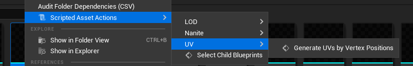
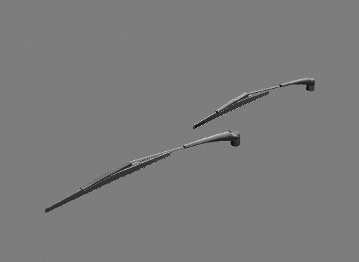

Навигация: README | 01. Минимальный автомобиль | 02. Экстерьер, свет и мир | 03. Салон, приборка и камеры | 04. Зеркала и дворники | 05. Звуки и FMOD | 06. Комплектации, логика и шпаргалка
В этом модуле вы настроите два важных симуляторных узла автомобиля:
Mirror)В City Car Driving 2.0 отражение в зеркалах реализовано через рендер-камеры, привязанные к отдельным мешам отражающих стёкол.
+Z определяет направление отражающей поверхности (лицевая нормаль зеркала смотрит строго вверх по +Z, само стекло лежит в плоскости XY!).+Y определяет направление вниз вдоль зеркала.(Это требование необходимо для работы скрипта автоматической генерации UV-координат, который проецирует вершины по осям X и Y.)
Generate Missing Collision = False, Material Import Method = Do Not Create Material, Build Nanite = False.MI_Mod_Mirror используется только для корпуса/плафона салонного зеркала, а не для отражающего стекла.)Camera и генерация UV в UEВыполните эти 2 шага для каждого импортированного Static Mesh зеркала:
Camera+ (Create Socket).Camera.Relative Rotation этого сокета — именно поворот сокета Camera задаёт, куда будет смотреть камера захвата отражения.
Generate UVs by Vertex Positions)Scripted Asset Actions → UV → Generate UVs by Vertex Positions
Allow CPU Access.Ctrl + S или ПКМ → Save) — звёздочка * на иконке должна исчезнуть!
V_<ИмяМода>StaticMeshComponent для каждого зеркала (например, внутрь Body для боковых и InteriorObjects для салонного), выставите NoCollision и Receives Decals = False.Asset User Data → Control Asset Data → ControlBlock с именем Mirror:
FOV типа Control Property Float — угол обзора камеры зеркала в градусах.FOV: 20–40 (более высокие значения сильно увеличивают нагрузку на производительность и искажают расстояния в зеркале).Wippers)Дворники в City Car Driving 2.0 работают с помощью скелетной анимации.

Animation Sequence должна представлять собой только первую половину цикла — движение дворника из исходного (нижнего) положения до крайнего (верхнего) положения! Обратный ход игра проигрывает автоматически.
.fbx с дворниками в MyFirstCar/Meshes/. В окне импорта:
Skeletal Mesh и Import Animations.Generate Missing Collision / создание Physics Asset при необходимости и выберите Material Import Method = Do Not Create Material.Skeletal Mesh, Skeleton и Animation Sequence.Material Instance от родительского материала MI_Mod_Wipers (Content/Common/MasterMaterials/VehicleMaterials/ModMaterials/MI_Mod_Wipers) и назначьте его в слот материала на Skeletal Mesh.Про сокеты зоны очистки стекла (которые можно увидеть в CieBensVGruppe):
Если вы откроете SM_CieBensVGruppe_Wipers, то увидите на костях сокеты LeftUpper, LeftBottom, RightUpper, RightBottom. На текущий момент сокеты на дворниках в модах НЕ используются и создавать их не нужно (функционал стирания капель со стекла в пользовательских автомобилях ещё не активен).
V_<ИмяМода>Обратите внимание на точное написание имени ControlBlock:
В коде игры блок называется Wippers — с двумя буквами p! Если написать Wipers, дворники не будут работать.
V_<ИмяМода> и добавьте компонент Skeletal Mesh (+ Add → Skeletal Mesh), выставите NoCollision и Receives Decals = False.Skeletal Mesh дворников.Use Animation Asset.Animation Sequence (первая половина цикла взмаха).Asset User Data → Control Asset Data → ControlBlock с именем Wippers:
Side типа Control Property String:
Front — для передних дворников;Rear — для заднего дворника.Vehicle.ini в секции [CarElectrics] задано сопротивление FrontWindshieldWiper_Resistance > 0 (и BackWindshieldWiper_Resistance > 0, если есть задний дворник).Следующий шаг: переходите к Модулю 5. Звуки автомобиля и работа с FMOD Studio, чтобы настроить звуковое сопровождение вашего автомобиля.